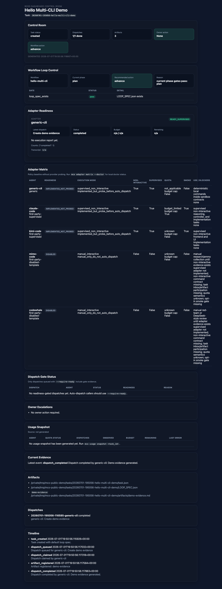
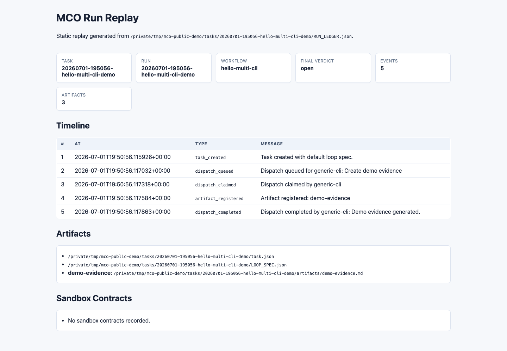
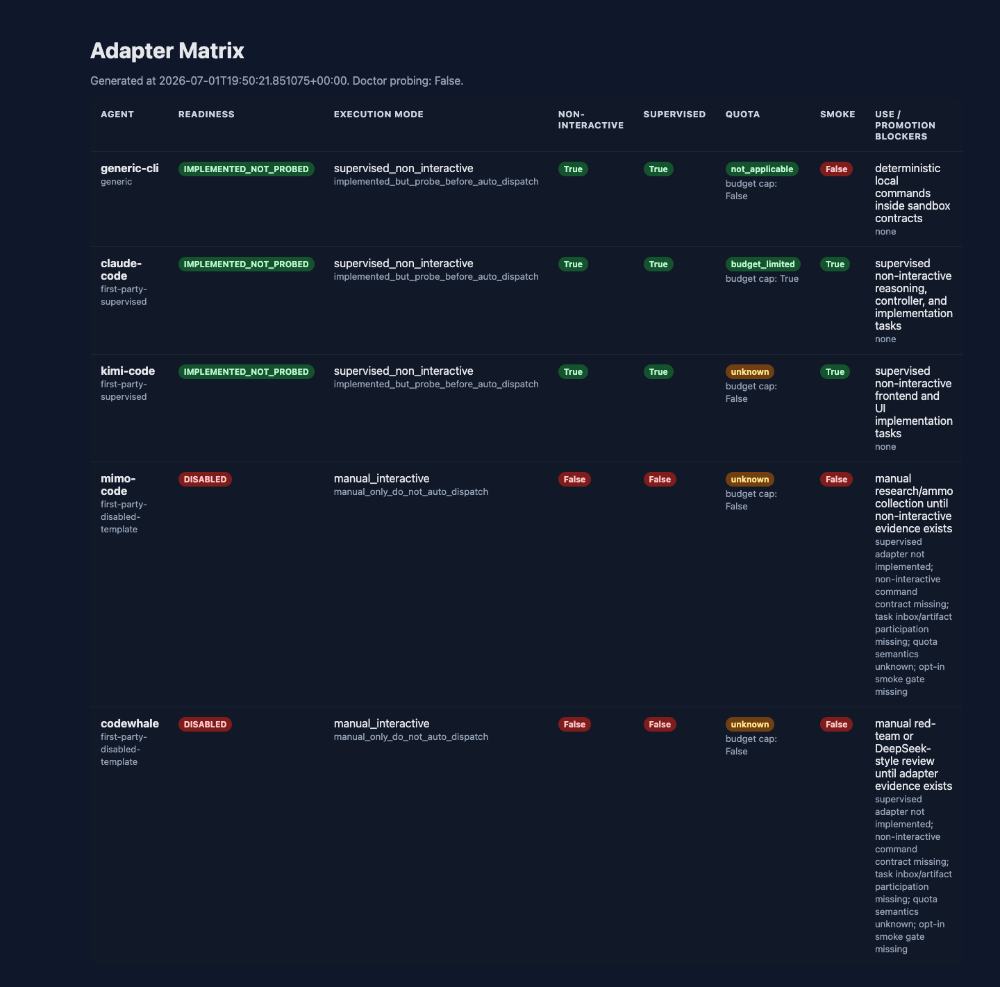

Multi-CLI Orchestrator
从复制粘贴 prompt，到可见、可审计、可回放的多 CLI 协作
这条演示线展示一个具体转变：任务不再散落在多个 AI CLI 窗口里，而是进入本地控制平面，由 workflow gate、artifact、dashboard 和 replay 共同证明下一步该继续、等待、升级还是完成。
1. 从真实痛点开始
多个 AI Coding CLI 可以带来多模型、多工具、多视角，但复杂任务里用户很容易变成“人工消息总线”：复制 prompt、贴路径、问谁完成了、判断有没有跑偏。
Multi-CLI Orchestrator 把工作单元从“窗口里的 prompt”变成“有状态、有门禁、有证据的 task workspace”。
2. 一条命令生成演示包
mco demo walkthrough \
--workspace /tmp/mco-public-demo \
--output-dir /tmp/mco-public-demo-output| 产物 | 说明 |
|---|---|
| Demo task | 一个本地任务工作区，包含 loop spec 和 ledger。 |
| Dashboard | 展示 workflow action、adapter readiness、dispatch、artifact 和 timeline。 |
| Replay | 从 run ledger 重建执行过程。 |
| Adapter kit | 生成 disabled-by-default 的 fake CLI adapter 示例。 |
3. 三张图讲清楚价值



4. 复现命令
git clone https://github.com/god0618-cloud/multi-cli-orchestrator.git
cd multi-cli-orchestrator
python -m venv .venv
source .venv/bin/activate
pip install -e .
mco demo walkthrough \
--workspace /tmp/mco-public-demo \
--output-dir /tmp/mco-public-demo-output
open /tmp/mco-public-demo-output/RUN_REPLAY.html5. 演示验收
| Gate | Pass condition |
|---|---|
| Fresh clone | 命令能在干净 clone 中运行。 |
| Dashboard | 能看见 workflow action、adapter readiness、artifact 和 timeline。 |
| Replay | 能从 `RUN_LEDGER.json` 重建过程。 |
| Adapter kit | 新 adapter 从 disabled 和 fake fixture 开始。 |
| Safety story | 观众理解为什么不能把所有 CLI 直接自动派发。 |